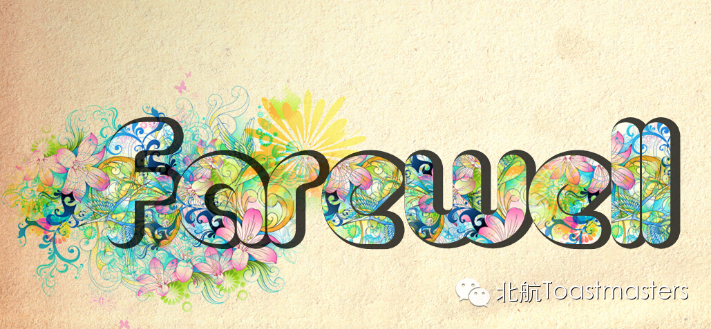
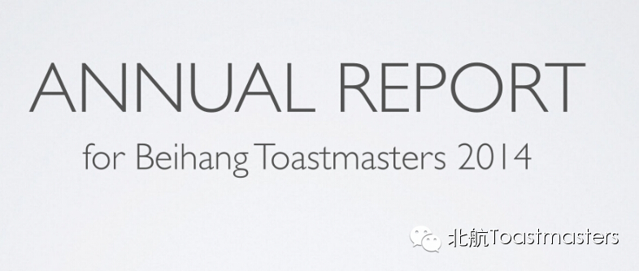
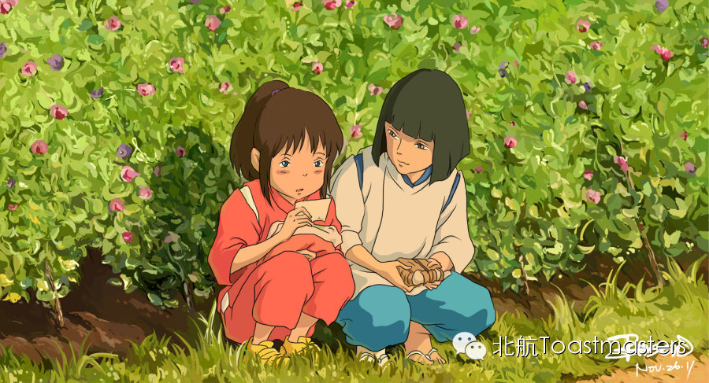
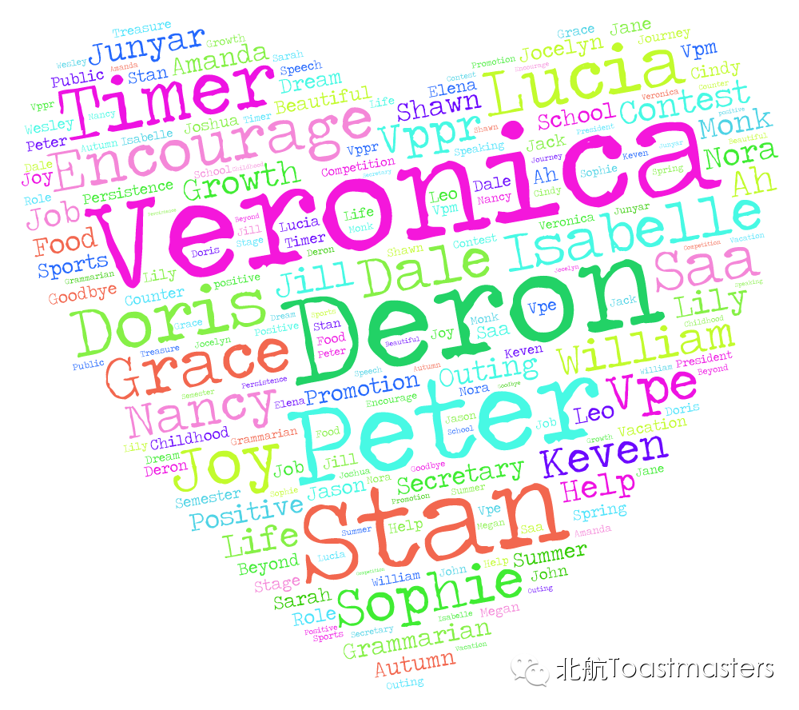
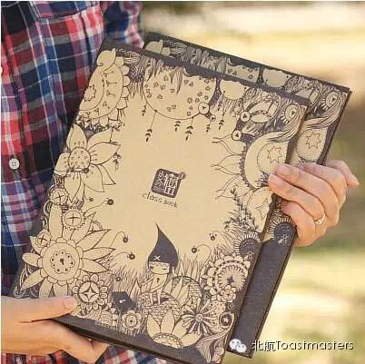

Farewell Party
Time: 19:30-21:30, Friday, Dec. 26th
Venue: Room A209, New Main Building, Beihang University

Toastmaster: Joy
Every year, when the graduates complete their seasons, our Beihang Toastmasters need to say goodbye to those wonderful friends. Those who are kind, helpful, and supportive, have made great contributions to our club.
Tonight, our Beihang Toastmasters prepared a special farewell party for you all. Hope you can enjoy it and make it memorable!
Lecture
Annual Report for Beihang Toastmaster 2014
Keven

Song
那些花儿
Grace
Game Session
Mauna Loa
Song
Always with Me
Keven & Grace

Special Session
Saying Goodbye
Doris, Sophie, Keven

Song
青春的纪念册
Sophie

Map
Our meeting venue is RoomA209, New Main Building, Beihang University (北航新主楼A209房间). Click here to see large map. And you can phone to Deron for help.
TEL: 180-0125-3933
See you in the meeting!

https://mp.weixin.qq.com/s/XNZQmkTS-3wO_0rISohb2A
本页为抢救式本地归档，图文已永久保存。